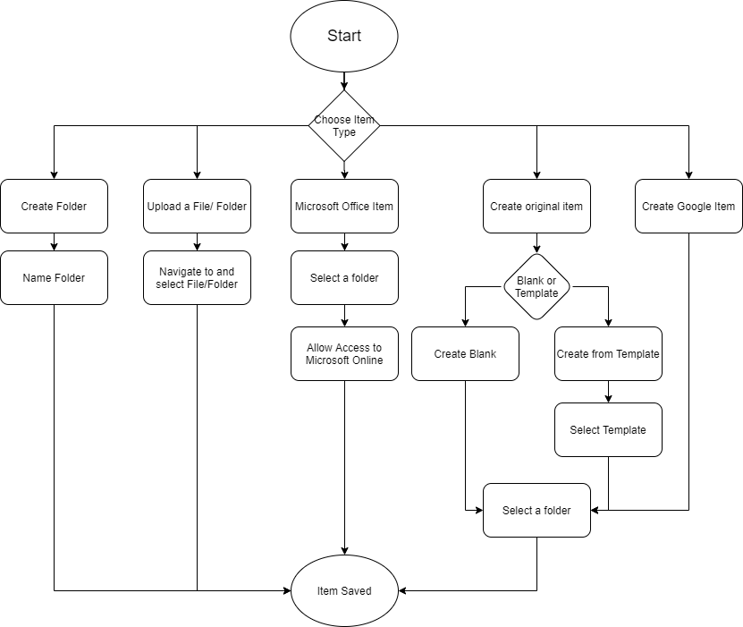
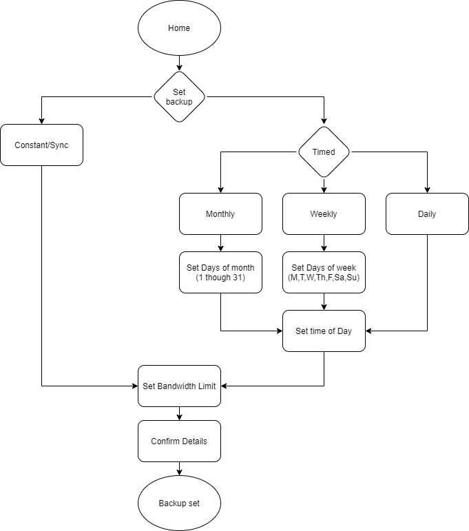
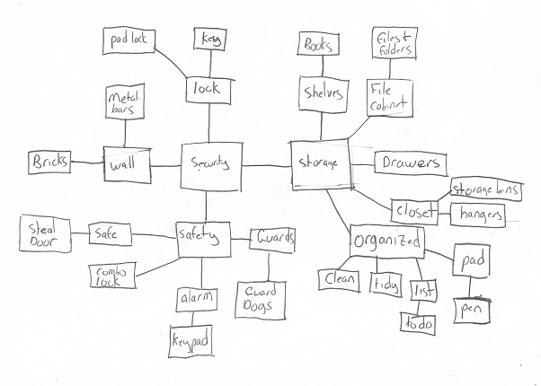
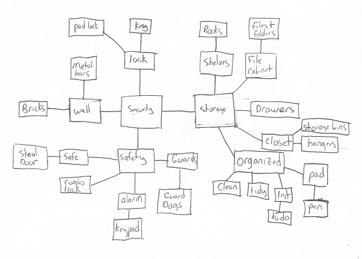
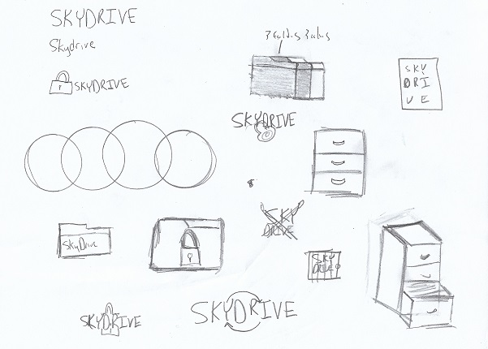

SkyDrive
Desktop and Mobile
Cloud Storage App
UX Research | UX Design | Visual Design | Brand Identity
Desktop Prototype Mobile PrototypeUX Research | UX Design | Visual Design | Brand Identity
Desktop Prototype Mobile PrototypeThe world of cloud storage world is packed with a diverse set of applications, but still there is room for improvement. I was tasked to build the app from the group up, find the right combination of features to meet the expanding needs of a cloud storage user.
The client came with a very broad idea of joining cloud storage and organization world. They felt there is plenty of room for a new application that has the right features for the evolving world.
After conducting extensive research, SkyDrive was born. SkyDrive boasts top of the line security and advanced backup and sync settings to give the user more control over their experience.
The search started with a user survey asking questions about what was most important to the user about a cloud storage and organization based apps.
A sample of the questions asked were:
User Personas were created from the information gathered in the research conducted
" I love to have memories of things I’ve done, but there’s only so much space on my phone! "
"You can have all the movies and albums in the world, but what the use if you don’t have 4k and surround sound? "
Competitive Analysis was conducted to research the top challegers in the industry. With a vast number of competitors in the field I narrowed it down to three main contendors with ranging advantages. The Opportunities for SkyDrive were discovered to be:
After gaining a better understanding of the user goals as well as the strengths and weaknesses of the current market, user stories were conceived. The following lists are items that were deemed high priority:
The next step was creating a potential sitemap was well as user flows to map out the best way to achieve each story. A successful user flow would be accomplished by having the simplest interactions while achieving the intended goal.
  View User Stories and FlowsWireframe sketches were created to get the basic ideas and fundamentals on the project onto paper.
Once the sketches were complete they were turned into Digital Wireframes and used for used for Usability tests. The usability tests were to establish whether the user was able to do three essential functions: Sign up for an account, create a collaborative document, and move a file into a folder. Success was not determined by completion of the scenarios, but getting a better understanding of the user’s struggles.
The homepage was a positive experience for the users. They were quickly able to sort through the onboarding process and felt very comfortable with the information and layout of the page. Users were easily able to identify the type of program the website was for as well as appreciating the details provided.
The User Homepage felt comfortable to the user, but observing the users it was easy to see there was room for improvement. There was a need to make the navigation aspects more familiar to the user. I spent time looking back at my wireframe sketches to see what changes needed to be made before putting the details into the Mockups.
Users were asked to complete three scenarios: sign up for an account with an email address, create a new sky document, and move the student loans file into the accounts and bills folder. Scenario one and the onboarding process was extremely successful. The users easily identified the buttons available to sign up and completed the task without any missed clicks.
Scenario two was my biggest opportunity for improvement. The user needed to identify the New button, then navigate to the SkyDrive file section, and click create a new Sky Document. With the original iteration of the wireframe it was obvious the New button needed to stand out more. Uploading and creating new content is at the top of the priority list, and is the key to the site’s functionality. I also realized the need to remove scope creep. In this iteration, there was connections to SkyDrive itself, Google Docs, and Microsoft office, each with the ability to create a word processing document, spreadsheet, and slidedecks. I realized that as much as the connectivity was nice, it was not a top priority. I would need to redesign the element to be more straight forward.
Scenario three also showed room for improvement. User familiarity with cloud-based apps was to drag and drop items when moving it to another location. That was not available in this prototype. The option button also needed to stand out more. There was room to improve it’s visual hierachy and become more obvious.
 

After reviewing the research, a significant amount of detail was available to assist moving forward. Using mind mapping and word lists, I was able to take the key ideas from my user interactions to find a name and logo that felt on target with our goal.
With the basic sketches and word association in mind, a mood board was created to get the feel of our product. The name SkyDrive felt on brand with our goal. When you break down the words, Sky representing the cloud in which users are storing their data, and Drive representing not only the idea of a hard drive but also speed. I gravitated towards simple geometric shapes and patterns, as well as images of the sky itself. Shades of blue, pink, and gray seemed to line up with all of the images that inspired me. When picking a brand typeface all of the patterns in the mood board pointed to a geometric type.
After reviewing the moodboard, the colors that stood out were a dark blue, light blue, tan, pink, and black. These colors not only lined up with the theme of sky, but also represented the brand characteristics. The shades of blue represent a sense of trust, stability, and safety, while the pink gives contrast and a feel of expessiveness and speed. I had to make sure not to use too much pink or the design might feel too playful. The neutral tan, black, and greys would give a calm, empathetic feel while also being easy on the eye.
Poppins was selected for its large variety of weights, its style has a feel that unites well with reliability and speed. PT Serif was chosen as the body typeface because of its detail and readability. This allows for the user to quickly and simply read information and allow for a stress-free environment. The combination of the two typefaces allows the user to clearly see hierarchy and make decisions rapidly.
When refining the logo, the simple geometric shapes came back into play. Along with the name I wanted a simple detail to relate back to the user research and the top priority of security. After ideating on ways to place a lock multiple variations of the logo were formed. The first iteration of our logo was born. Though I wanted to keep with simplicity and basic shapes, the logo needed a pattern to really stand out. A square and rectangle were joined to create the inner lock mechanism and creating the final logo.
With all branding information near completion, a style guide was created for future reference. All rules from logos and iconography to colors and typeface were presented with key examples to give future designers the proper tools to succeed. Principles and SkyDrive’s vision are detailed in the front of the guide to inform the designer the feel of the product.
The style guide was used as the instrument to paint the details of the wireframes template. The user feedback taken from the initial usability test was helpful to see the initial flaws and correct the necessary details. When needed, I reflected back on the original sketches to find inspiration for modifications to the prototypes. The desktop prototype was created first and used as a model for the mobile application. I made sure the mobile version was not just a watered-down, bare-minimum adaptation but a fully-functional experience. My goal was and is for the user to feel just as comfortable using the mobile app as the desktop.
Preference testing was conducted to see how users relate to a few different aspects of the application. Specifically coloring on mobile icons, sizing of desktop icons, and the homepage image were tested.
The first preference test was to see which coloring users prefered on mobile icons. The test came back in favor of the white icons.
Test two was to see if users preferred the darker or light background for the homepage. The test came back at a 50/50 split. I decided to use the darker bachground to give more constrast, and visual hierachy.
The final test was to see the preferred size of the desktop icons for bookmarked, recent, and recycled. The test came back statistically insignificant. After some further research, the decision was made to find a size in between the sizes tested.
A second round of usability tests were conducted to test both desktop and mobile prototypes. I included a participant that titled herself "not tech-savvy" to see how someone who was not familiar with cloud storage would interact with the applications. More edits were made based on the tests as well as my observation of the experiences. SkyDrive is always evolving, ways to improve the design for better user experience should always be kept in the front of the designer’s mind. The devil is always in the details, and will make our project what stands out from its competition.
The Desktop Homepage was modified to create more sense of hierarchy and make the Call-to-Action button more apparent. Typography and spacing were also improved to give a better feen and better hierachy.
The User Home was modified based on the user testing, to give more emphasis on the Avatar. This highlighted that the Avatar was a clickable. The New button was adjusted to show it’s importance, making it a focal point. The navigation bar was also modified to feel more relevant.
The mobile Homepage was modified similarly to its desktop equivalent. The Call-to-Action button became a larger focal point, showing the user what the screen main intention is.
The mobile User Home was adjusted to make the bottom navigation bar more informative. Labeling each of the buttons, and readjusting the icon size make the bar more useful and less intrusive.
SkyDrive is a product that built itself. From the initial research to its current iteration, SkyDrive has been focused on security and speed.
After each step of the process, the design seemed to find the next step to layer on the details of what this product is really about.
Focusing on user feedback was incredibly helpful to finding out what functioned as intended, and what needed work.
Although some aspects of first drafts were not effective, the feedback and observation was used to find the proper design.
Avoiding scope creep was a bit of a struggle at times, but when re-evaluating and remembering Pareto’s Principle helped streamline the project to be a success.
At first glance, creating another cloud storage and organization competitor seemed like a daunting task.
Taking the time to assess the competition as well as hear what the users had to say, it quickly became apparent what this project could become.
The biggest lesson learned from this project was letting the users and data illustrate the design instead of preconceived notions. All of the information learned helped me become a better designer.
My future experience and future designs will be crafted based on the product as a whole instead of each individual feature. When you become too feature focused it’s easy to miss how everything fits into the larger user experience.